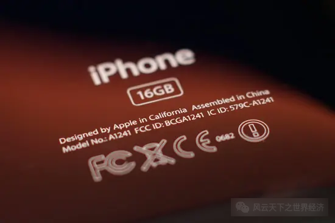
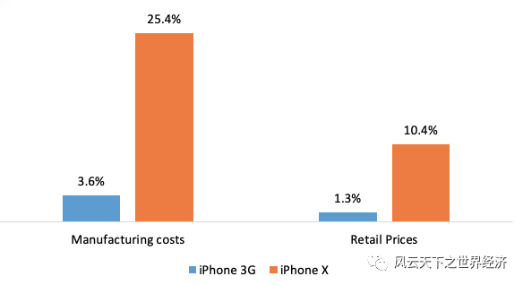
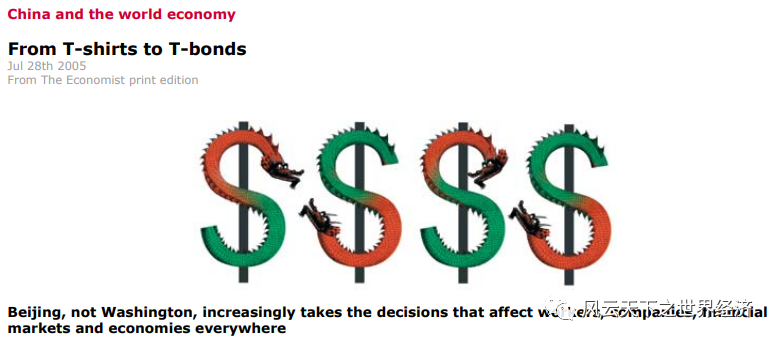

在金庸的武侠小说中，崆峒派有一种诡异的传世武功——
此拳法出拳时声势煊赫，一拳中有七股不同的劲力，或刚猛、或阴柔、或刚中有柔，或柔中有刚，或横出，或直送，或内缩，敌人抵挡不住这源源而来的劲力，便会深受内伤。
体内有阴阳二气、肺属金、肝属木、肾属水、心属火、脾属土五行，所谓「七伤」，便是这七种伤害。但这「七伤拳」倘由内力未臻化境的人来使用，对自己有极大伤害，伤人也伤己。拳力每深一层，自身伤害就多一分。
这种看起来“害人害己”的武功总是让人觉得有些匪夷所思，但是武侠的光影世界里却透漏着一丝令人尴尬的现实。
前总统先生的“七伤拳”
2018年，美国对华商品贸易逆差飙升至4182亿美元。为了追求的所谓的“公平贸易”，时任美国总统唐纳德·特朗普挑起了一场与中国的贸易战。时至今日，贸易战的硝烟依然笼罩在当今世界上两个最大市场上空，这意味着66.4%的中国输美商品仍然在支付着平均高达21.2%的税率。
从“损害了美国工业”的光伏和洗衣机开始，再到“作为国家安全威胁的钢铁和铝”，再到“技术、知识产权的不公平贸易”，前总统先生言之确凿地要把中国对美的出口的各色产品全部摆上了靶位，志在将关税的长弓拉满，一劳永逸地解决这个“困扰”中美贸易长达三十多年的“难题”。
如今4年过去了，白宫早已易主，总统先生也成为了前总统先生，为中国商品加征的关税还在，那么中美贸易逆差是否已经不复存在了呢？
非常遗憾，中美贸易的差额在经历了2019年和2020年的短暂下降之后，在2021年再度飙升到了3553亿美元。即使在21.2%的高额关税墙的阻隔之下，中国对美国的出口在2021年再度飙升至5000亿美元以上，这个数字一度让前总统先生耿耿于怀。
曾经在美国贸易战历史上屡试不爽的关税利器，缘何在这个时代哑火？让我们从一个在信息时代大家最熟悉的商品说起。
一部手机的环球之旅
iPhone是智能手机的开创者。2007年1月9日，第一部没有键盘的手机在乔布斯遗世独立的演讲中首次出现在世人面前。在15年以后的今天，它依然定义着手机的样子，成为我们在信息海洋中航行中最值得信赖的依傍。但是，即使是大家对这个产品如此熟悉，你也不一定能轻易完成下面这道填空题：
iPhone is made in ________.
以上空白该填哪里？美国、中国、韩国？
早期的苹果手机后壳上还留着一些解答这个问题的提示，“Designed in California, Assembled in China”，——在加州设计，在中国组装。但是从iPhone X开始，这句话再也没有出现，或许苹果公司意识到，这样的表述并不能准确的描述一部手机真实制造过程。

iPhone早期版本背后的产品标识
如果你不肯在上面的空白处填上“中国”，至少可以保证你在这道题上不犯错，但是iPhone却实实在在地贡献着中美的贸易差额。因为这款产品自问世之日起，就是从中国深圳的富士康流水线出发而走向世界的不同角落，成为人们进入全球移动互联网络的入口，而其中的大部分是来到了美国。
实际上，苹果手机的制造过程早在深圳富士康之前就开始了。其芯片、主要的工业设计和产品方案在美国完成，在日本制造关键零部件，由韩国制造最核心的芯片和显示屏，由中国台湾厂商供应另外一些零部件，韩国LG生产着iPhone上最贵的显示屏、台积电生产当时最先进的芯片A13，日本村田制作所生产着iPhone上的传感器，德国英飞凌生产着iPhone的数字基带、射频收发器件和电源管理器件，中国台湾的TPK和胜华生产着iPhone的触摸屏……
最后在深圳富士康工厂里面组装完成，成为一部完整的移动通讯设备。
尽管我们对这件掌上设备无比熟悉，但是由于参与制造的国家太多，使得苹果手机的供应链体系几乎无法用列举法完整呈现。
当你了解了这个过程之后，如果依然不能完成上面的填空题。我还是想给你一个参考答案——那就是everywhere。
这一部被记录在中国出口报关单上的产品，除了Foxcn里中国工人勤劳的双手以外，难道就没有其他中国人的贡献吗？事实显然不是这样的，位于中国深圳的电池制造商欣旺达(Sunwada)为iPhone X提供电池组，而中国公司东山精密通过其收购的美国公司M-Flex为iPhone X提供印刷电路板。
根据日本国立政策研究大学院大学经济学教授邢予青提供的拆解数据，iPhone X的材料清单总值为409.25美元，其中中国企业总共贡献104美元，约占总制造成本的25.4%。这意味着在全球市场销售的每部iPhone X为中国经济带来104美元的收入。
但是与十年前的iPhone 3G版本相比，中国在iPhone的制造过程的贡献已经发生了巨大的变化，那时中国的附加值只有6.5美元，约占总生产成本的3.6%。十年后，这个数字变成了25.4%。
十年流变，产业链在发生着微妙的变化，中国提供的价值越来越大，并且在产业链上一路攀升，这或许就是美国真正害怕的地方。

iPhone 3G和iPhone X中国增值份额对比
那么iPhone的制造过程和中美贸易的巨额逆差是个什么关系呢？每出口一台iPhone X，中国对美国的出口就增加409.25美元。其中有76.5美元的零部件是来自美国。因此，从中国进口一部iPhone X会给美国带来332.75美元(合409.25-76.5美元)的贸易逆差。
但是，iPhone并非是仅仅发生在中美之间的故事。韩国、日本和其他国家地区也参与了iPhone X的生产，并提供了超过45% 的零部件。也就是说，332.75美元不仅包括来自中国的增值，还包括韩国、日本和其他非美国国家的贡献。这应该被视为美国与所有参与iPhone X生产的其它国家(不仅仅是中国)之间的贸易逆差。如果把这些因素都剔除，每一部iPhone X所造成中美贸易逆差实际上应该是104美元，不到实际数字332.75的1/3。
根据Finder在《iPhone sales statistics: Just how popular is Appleʼs smartphone in the US?》一文提供的数据，2017年，美国消费者购买了4220万台 iphone。以这个数字为参照，仅 iPhone贸易就夸大了2018年美国对华贸易逆差96.5亿美元，约占美国对华贸易逆差总额的2.3% 。
对于iPhone手机的细密拆解至少让我们明白，如果中国输美产品大部分是按照这样的分工模式来完成的，那么大部分加在中国商品上的关税将会被传导至价值链上游的每个环节，而美国恰恰就在此处。
关税战——几乎不可能完成的任务
一部iPhone就是一张中国制造业的缩影。
2005年，《Economist》杂志的“专门报告”（Special Report）专栏刊登了一篇题为《中国与世界经济：从T-Shirt到T-Bond》文章，分析了中国经济对世界的影响。从标题中你便可知，20年前中国就是主要靠T恤衫这样的商品进入国际生产和贸易系统，并形成了经济学家们所说的“积极的供应冲击”。

《中国与世界经济：从T恤到国库债券》
中美贸易二十年斗转星移，T-Bond仍然是两个超级大国在全球经贸和金融体系博弈中绕不开的话题，但是T恤衫已经不再是这一宏大叙事的起点，取而代之的则是以iPhone为代表的Telecom产品。
2021年，苹果手机所属的机电产品和高新技术产品约占中国总出口的75%。在海关税则里，这两类产品主要归属于第84和85章，它们的制造过程都具有和iPhone类似的特点——其产成品的背后都有一条长长的复杂生产网络。当然，主导这张网络的是策动本轮全球化的跨国公司们，正是他们从1990年开始在全球整合生产资源，把这张生产之网编织的细密无比。在这张网的遮挡下，产品的国家属性变得日益模糊，几不可辨。
无孔不入的全球价值链让出口和进口之间的界限变得模糊，就像iPhone一样，中国要想出口一件价值409.25美元的东西，则先要进口305.25美元的东西。
在中国，许多出口厂商同样也是进口厂商，超过97%的贸易企业参与出口，有接近64%的出口企业同时从国外进口中间投入品，这一事实说明中国企业已经深度嵌入国际供应链体系之中。在这种背景下，针对中国出口的关税保护行为必然会影响该出口企业的其他行为，其中进口必然会首当其冲地遭受冲击。所以，全球生产高度整合的今天，传统贸易时代的关税利器锋芒不再。通过拆解一部iPhone手机就可以看懂的故事，前总统先生却视而不见。
好的理论尽管因简约而显得有些朴素，但是总能在现实中找到它的价值。换成人民币，我们把故事的结局再重述一遍：2021年，中国与美国贸易战的硝烟依然甚嚣尘上，也是在这一年，中美货物贸易进出口额分别超过了3.7万亿元和1.16万亿元人民币，均创下了自2015年来的最高水平。那个让前总统先生耿耿于怀的中美贸易逆差超过2.56万亿元人民币，增幅超过3661亿元人民币，也创下了2015年的新高。
七伤拳，一练七伤，先伤己后伤人，这是武侠世界里的绝世武功，也是美国贸易战背后的真相。
参考文献：
- Finder (2019), “iPhone sales statistics: Just how popular is Apple’s smartphone in the US?”, Finder.com.
- Xing, Y (2019), “How the iPhone widens the US trade deficit with China: The case of the iPhone X”, GRIPS Discussion Papers 19-21.
- 鲁晓东、刘京军、陈芷君：《出口商如何对冲汇率风险:一个价值链整合的视角》，《管理世界》，2019,35(05)。
- 鲁晓东、王晗希：《当贸易保护遭遇全球价值链：中国的经验证据》，working paper，艰难投稿中，2021年。
- END -